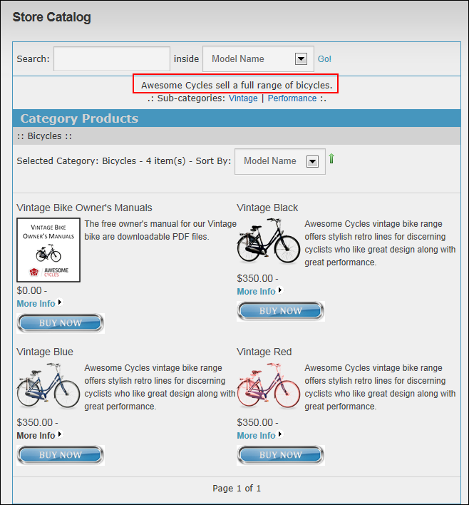
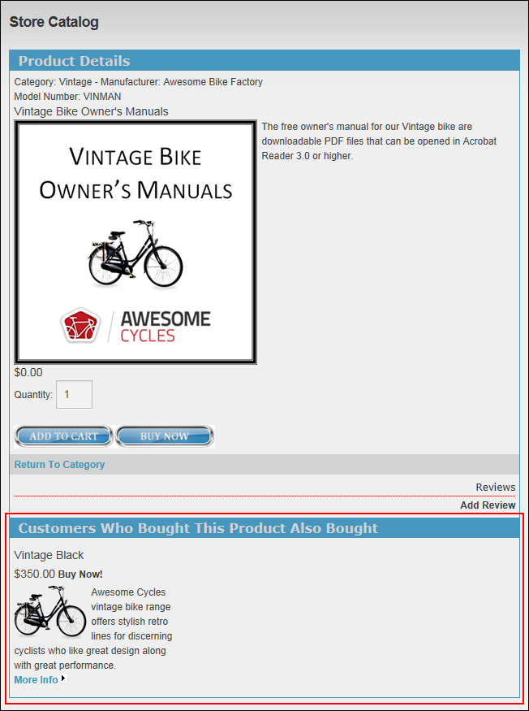
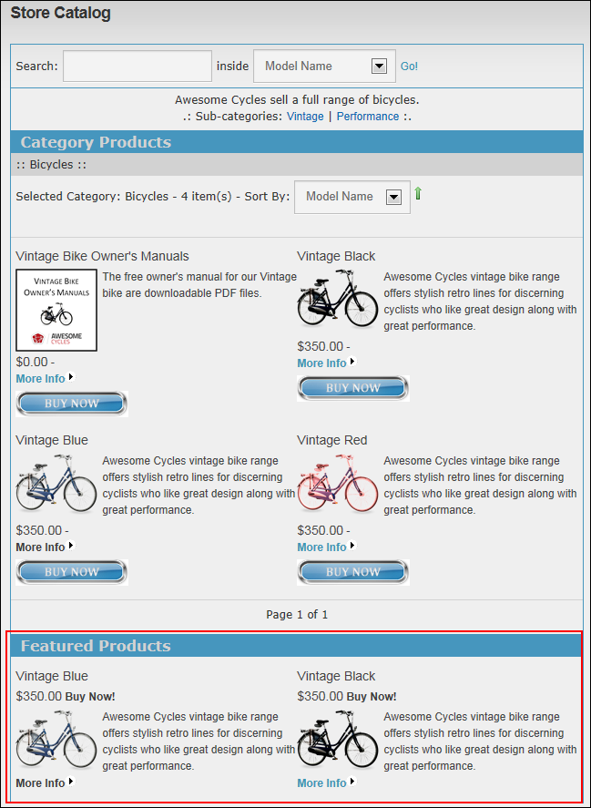

- At Catalog Template, select the template to be applied to the default Catalog page. The default setting is Catalog.htm, which is used in Store images throughout this manual. For details on using other templates,
- At Use Default Category, select from these options:
- Mark
 the check box to set a default category to be displayed on the default catalog page.
the check box to set a default category to be displayed on the default catalog page.- At Default Category, select the default category - OR - Select (None) to display no category and therefore no products by default.
- Unmark
 the check box to use the option set in the catalog template select above. In the default Catalog.htm new products and featured products are displayed by default. This is the default setting.
the check box to use the option set in the catalog template select above. In the default Catalog.htm new products and featured products are displayed by default. This is the default setting.
- Mark
- At Show Category Message, select from these options:
- Mark the check box to display the message entered in the Message field of the category (as shown in the next image). This is the default setting.

- Unmark the check box to hide the message.
- Mark
- At Show Category Products, select from these options:
- Mark the check box to displays products in the Store Catalog module.
- Unmark the check box to hide products in the Store Catalog module. Warning. Users cannot view products in the Store Catalog if this option is selected.
- Mark
- At Show Product Detail, select from these options:
- Mark the check box to enable the Product Details page associated with the More Info link on the Store Catalog.
- At Show Also Bought Products, select from these options:
- Mark the check box to display the "Customers Who Bought This Product Also Bought" section on the Product Details page.

- Unmark the check box to disable the Also Bought Products field.
- Mark
- At Show Also Bought Products, select from these options:
- Unmark the check box to hide the Product Details page. If this option is selected, it is recommended that you trial this setting with different Catalog Templates to find the correct combination for your store.
- Mark
- At Show New Products, select from these options:
- Mark the check box to display the New Products section. New Products are shown when customers first navigates to the Store Catalog and on the relevant category page.

- Unmark the check box to disable the New Products section.
- Mark
- At Show Featured Products, select from these options:
- Mark the check box to display featured products in the Store Catalog module.

- Unmark the check box to disable featured products.
- Mark
- At Show Popular Products, select from these options:
- Mark the check box to display popular products in the Store Catalog module.

- Unmark the check box to hide popular products.
- Mark
- At Allow Print?, select from these options:
- Mark the check box to disable the default print module setting. You have to add the StorePrint.Action button to your container skin to be able to use this feature.
- Unmark the check box to use default print option.
- Mark
- At Enable Content Indexing, select from these options:
- Mark the check box to enable content indexing by the DNN search engine. If you use several Store Catalog modules, you should check this setting on ONLY one Store Catalog module instance. Otherwise, your products will indexed twice (or more) by the search engine.
- Unmark the check box to disable DNN Search.
- Mark
- At Enable Image Caching, select from these options:
- Mark the check box to enable image caching. Note: This option should be unchecked while designing the Store or you will have to wait for the cache duration to see your image changes (impacted settings are size and background color for GIF images).
- Unmark the check box to disable image caching.
- Mark
- In the Cache Duration text box, enter the cache duration (in minutes) for images. The default setting is 2.